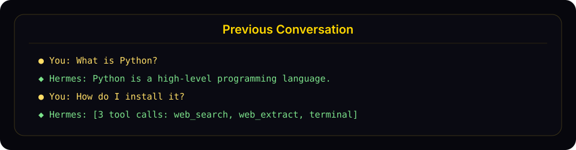

Sessions（会话）
Hermes Agent 自动将每次对话保存为一个 session。Session 支持对话恢复、跨 session 搜索以及完整的对话历史管理。
Session 的工作原理
每次对话——无论来自 CLI、Telegram、Discord、Slack、WhatsApp、Signal、Matrix、Teams 还是其他任何消息平台——都会以完整消息历史的形式存储为一个 session。Session 记录在：
- SQLite 数据库（
~/.hermes/state.db）——包含 FTS5 全文搜索的结构化 session 元数据，以及完整消息历史
SQLite 数据库存储： - Session ID、来源平台、用户 ID - Session 标题（唯一、人类可读的名称） - 模型名称和配置 - 系统 prompt（提示词）快照 - 完整消息历史（角色、内容、工具调用、工具结果） - Token 计数（输入/输出） - 时间戳（started_at、ended_at） - 父 session ID（用于压缩触发的 session 分割）
哪些内容计入上下文
Hermes 存储 session 历史以便恢复对话，但不会在每次对话时重新发送所有历史字节。每轮对话中，模型看到的是：所选系统 prompt、当前对话窗口，以及 Hermes 为该轮显式注入的内容。
媒体附件作为轮次范围内的输入处理：
- 图片可以原生附加到下一次模型调用，或在当前模型不支持原生视觉时预先分析为文字描述。
- 音频在配置了语音转文字时会被转录为文本。
- 文本文档可以将提取的文本包含在内；其他文档类型通常以本地保存路径和简短说明来表示。
- 附件路径和提取/派生的文本可能出现在对话记录中，但原始图片、音频或二进制文件字节不会被反复复制到后续 prompt 中。
例如，如果用户发送一张图片并要求 Hermes 制作表情包，Hermes 可能会用视觉能力检查该图片一次并运行图像处理脚本。后续轮次不会自动将原始 JPEG 带入上下文，只携带写入对话的内容，例如用户的请求、简短的图片描述、本地缓存路径或最终的助手回复。
上下文增长最常见的原因不是媒体文件本身，而是冗长的文本：粘贴的转录、完整日志、大型工具输出、长 diff、重复的状态报告以及详细的证明转储。优先使用摘要、文件路径、重点摘录和工具支持的查找，而不是将大型内容复制到聊天中。
提示
当 session 变长时使用 /compress，用 /new 开启新线程，仅在需要从存储中删除旧的已结束 session 时才使用 hermes sessions prune。压缩会减少活跃上下文，而不是隐私删除。向 /new 传入名称（例如 /new payments-refactor）可以预先设置新 session 的初始标题——便于之后通过 /resume <name> 或 /sessions 选择器找到它。
Session 来源
每个 session 都标记了其来源平台：
| 来源 | 描述 |
|---|---|
cli |
交互式 CLI（hermes 或 hermes chat） |
telegram |
Telegram 消息 |
discord |
Discord 服务器/私信 |
slack |
Slack 工作区 |
whatsapp |
WhatsApp 消息 |
signal |
Signal 消息 |
matrix |
Matrix 房间和私信 |
mattermost |
Mattermost 频道 |
email |
电子邮件（IMAP/SMTP） |
sms |
通过 Twilio 的短信 |
dingtalk |
钉钉消息 |
feishu |
飞书/Lark 消息 |
wecom |
企业微信 |
weixin |
微信（个人版） |
bluebubbles |
通过 BlueBubbles macOS 服务器的 Apple iMessage |
qqbot |
QQ Bot（腾讯 QQ）通过官方 API v2 |
homeassistant |
Home Assistant 对话 |
webhook |
传入 webhook |
api-server |
API 服务器请求 |
acp |
ACP 编辑器集成 |
cron |
定时 cron 任务 |
batch |
批处理运行 |
CLI Session 恢复
使用 --continue 或 --resume 从 CLI 恢复之前的对话：
继续上次 Session
# 恢复最近的 CLI session
hermes --continue
hermes -c
# 或使用 chat 子命令
hermes chat --continue
hermes chat -c
这会从 SQLite 数据库中查找最近的 cli session 并加载其完整对话历史。
按名称恢复
如果你已为 session 设置了标题（见下方Session 命名），可以按名称恢复：
# 恢复一个命名 session
hermes -c "my project"
# 如果存在谱系变体（my project、my project #2、my project #3），
# 会自动恢复最新的一个
hermes -c "my project" # → 恢复 "my project #3"
恢复特定 Session
# 按 ID 恢复特定 session
hermes --resume 20250305_091523_a1b2c3d4
hermes -r 20250305_091523_a1b2c3d4
# 按标题恢复
hermes --resume "refactoring auth"
# 或使用 chat 子命令
hermes chat --resume 20250305_091523_a1b2c3d4
Session ID 在退出 CLI session 时显示，也可通过 hermes sessions list 查找。
恢复时的对话摘要
恢复 session 时，Hermes 会在输入提示符前以样式化面板显示之前对话的紧凑摘要：

恢复模式会在返回实时提示符前显示一个紧凑摘要面板，包含最近的用户和助手轮次。
摘要内容：
- 显示用户消息（金色 ●）和助手回复（绿色 ◆）
- 截断长消息（用户 300 字符，助手 200 字符/3 行）
- 折叠工具调用为带工具名称的计数（例如 [3 tool calls: terminal, web_search]）
- 隐藏系统消息、工具结果和内部推理
- 最多显示最近 10 轮，并以"... N earlier messages ..."指示器标注
- 使用暗色样式与活跃对话区分
要禁用摘要并保留最简单的单行行为，在 ~/.hermes/config.yaml 中设置：
display:
resume_display: minimal # 默认值: full
提示
Session ID 格式为 YYYYMMDD_HHMMSS_<hex>——CLI/TUI session 使用 6 位十六进制后缀（例如 20250305_091523_a1b2c3），gateway session 使用 8 位后缀（例如 20250305_091523_a1b2c3d4）。可以按 ID（完整或唯一前缀）或按标题恢复——-c 和 -r 均支持两种方式。
跨平台切换
在 CLI session 中使用 /handoff <platform> 将实时对话转移到消息平台的主频道。Agent 会从 CLI 停止的地方精确接续——相同的 session id、完整的角色感知对话记录、工具调用一并保留。
# 在 CLI session 内
/handoff telegram
执行过程：
- CLI 验证
<platform>已启用且已设置主频道（在目标聊天中运行一次/sethome即可配置）。 - CLI 将 session 标记为待处理并阻塞轮询 gateway。如果 agent 正在处理轮次，则拒绝操作——请等待当前响应完成后再执行。
- Gateway 监视器认领切换请求，并向目标适配器请求新线程：
- Telegram — 开启新的论坛话题（如果在聊天中启用了 Bot API 9.4+ Topics 模式则为私信话题，或论坛超级群组话题）。
- Discord — 在主文字频道下创建 1440 分钟自动归档的线程。
- Slack — 发布一条种子消息并使用其
ts作为线程锚点。 - Matrix — 发布一条种子消息并使用其事件 id 作为线程根（
m.thread关系）。 - WhatsApp / Signal / SMS — 无原生线程，回退到直接使用主频道。
- Gateway 将目标键重新绑定到你现有的 CLI session id，然后伪造一个合成用户轮次，要求 agent 确认并总结。回复会出现在新线程中。
- Gateway 确认成功后，CLI 打印
/resume提示并干净退出：
↻ Handoff complete. The session is now active on telegram.
Resume it on this CLI later with: /resume my-session-title
- 从此时起，对话在该平台上继续。在新线程中回复——该频道中任何已授权的用户共享同一 session，之后线程中任何真实用户消息都能无缝加入，因为线程 session 的键不含
user_id。
恢复到 CLI： 当你想回到桌面时，只需运行 /resume <title>（或在 shell 中运行 hermes -r "<title>"），从平台停止的地方继续。
故障模式：
- 未配置主频道 → CLI 拒绝并提示 /sethome。
- 平台未启用/gateway 未运行 → CLI 在 60 秒后超时并显示明确消息，CLI session 保持完整。
- 线程创建失败（权限不足、话题模式未开启）→ 直接回退到主频道并仍然完成切换；没有线程隔离，但切换本身有效。
- adapter.send 失败（速率限制、临时 API 错误）→ 切换标记为失败并附带原因；行被清除以便重试。
值得注意的限制： 对于无线程能力的多用户群组主频道平台，合成轮次以私信风格 session 为键。这对自私信主频道（典型设置）有效，但对真正的共享群聊并不理想。线程支持覆盖 Telegram / Discord / Slack / Matrix——这是最常见的情况——因此大多数设置不会遇到此问题。
Session 命名
为 session 设置人类可读的标题，便于查找和恢复。
自动生成标题
Hermes 在第一次交换后自动为每个 session 生成简短的描述性标题（3–7 个词）。这在后台线程中使用快速辅助模型运行，不增加延迟。浏览 hermes sessions list 或 hermes sessions browse 时可以看到自动生成的标题。
自动命名每个 session 只触发一次，如果你已手动设置标题则跳过。
手动设置标题
在任何聊天 session（CLI 或 gateway）中使用 /title 斜杠命令：
/title my research project
标题立即生效。如果 session 尚未在数据库中创建（例如在发送第一条消息之前运行 /title），则会排队等待 session 启动后应用。
也可以从命令行重命名现有 session：
hermes sessions rename 20250305_091523_a1b2c3d4 "refactoring auth module"
标题规则
- 唯一——不能有两个 session 共享同一标题
- 最多 100 个字符——保持列表输出整洁
- 净化处理——控制字符、零宽字符和 RTL 覆盖字符会被自动去除
- 普通 Unicode 均可——emoji、CJK 字符、带重音字符均支持
压缩时的自动谱系
当 session 的上下文被压缩（通过 /compress 手动或自动触发）时，Hermes 会创建一个新的续接 session。如果原 session 有标题，新 session 会自动获得带编号的标题：
"my project" → "my project #2" → "my project #3"
按名称恢复时（hermes -c "my project"），会自动选取谱系中最新的 session。
在消息平台中使用 /title
/title 命令在所有 gateway 平台（Telegram、Discord、Slack、WhatsApp）中均可使用：
/title My Research— 设置 session 标题/title— 显示当前标题
Session 管理命令
Hermes 通过 hermes sessions 提供完整的 session 管理命令集：
列出 Session
# 列出最近的 session（默认：最近 20 个）
hermes sessions list
# 按平台过滤
hermes sessions list --source telegram
# 显示更多 session
hermes sessions list --limit 50
当 session 有标题时，输出显示标题、预览和相对时间戳：
Title Preview Last Active ID
────────────────────────────────────────────────────────────────────────────────────────────────
refactoring auth Help me refactor the auth module please 2h ago 20250305_091523_a
my project #3 Can you check the test failures? yesterday 20250304_143022_e
— What's the weather in Las Vegas? 3d ago 20250303_101500_f
当没有 session 有标题时，使用更简单的格式：
Preview Last Active Src ID
──────────────────────────────────────────────────────────────────────────────────────
Help me refactor the auth module please 2h ago cli 20250305_091523_a
What's the weather in Las Vegas? 3d ago tele 20250303_101500_f
导出 Session
hermes sessions export 是所有导出格式的统一入口，用 --format 选择：
| 格式 | 输出 | 适用场景 |
|---|---|---|
jsonl（默认） |
每个 session 一个 JSON 对象 | 备份、机器可读的往返格式 |
md / qmd |
每个 session 一个 Markdown/Quarto 文件 + manifest | 可读归档、笔记 |
html |
单个独立页面（多 session 带侧边栏） | 分享、浏览 |
trace |
Claude Code JSONL | HF Agent Trace Viewer、--upload |
另有 --only user-prompts 只导出你的 prompt（jsonl 或 md）。
所有格式共享同一套选择方式：--session-id 导出单个 session，或使用与 prune / archive 相同的完整过滤器进行批量导出 — --older-than / --newer-than / --before / --after（时长如 5h/2d/1w、纯数字天数或 ISO 时间戳）、--source、--title、--model、--provider、--cwd、--min/--max-messages、--min/--max-tokens、--min/--max-cost、--min/--max-tool-calls、--user、--chat-id、--chat-type、--branch、--end-reason。--dry-run 可预览匹配集而不写入。--redact 在任意格式下从导出内容中清除密钥（API key、token、凭据）— 任何打算分享的导出都建议加上。注意：带过滤器的批量导出只匹配已结束的 session；不带过滤器的 export 会导出所有 session（包括活跃的）。
JSONL（默认）
# 将所有 session 导出到 JSONL 文件
hermes sessions export backup.jsonl
# 导出特定平台的 session
hermes sessions export telegram-history.jsonl --source telegram
# 导出单个 session
hermes sessions export session.jsonl --session-id 20250305_091523_a1b2c3d4
# 从导出内容中脱敏 API key/token/凭据
hermes sessions export backup.jsonl --redact
导出文件每行包含一个 JSON 对象，包含完整的 session 元数据和所有消息。
HTML
--format html 生成一个完全独立的 HTML 文件 — 无远程依赖 — 带样式化的消息气泡、可折叠的工具输出，多 session 导出时还带侧边栏导航：
# 将一个 session 导出为独立 HTML 页面
hermes sessions export --format html --session-id 20250305_091523_a1b2c3d4 transcript.html
# 将最近一周的所有 Telegram session 导出到一个文件，并脱敏
hermes sessions export --format html --newer-than 1w --source telegram --redact archive.html
只导出 Prompt
--only user-prompts 只导出你写的 prompt — 不含助手回复、工具输出或系统上下文。适合构建 prompt 库或回顾你问过什么：
# 每个 prompt 一条 JSONL 记录（session id、序号、时间戳、文本）
hermes sessions export prompts.jsonl --session-id 20250305_091523_a1b2c3d4 --only user-prompts
# Markdown 格式，直接输出到 stdout
hermes sessions export - --session-id 20250305_091523_a1b2c3d4 --only user-prompts --format md
支持 --format jsonl（默认）或 md，批量导出时同样支持全部过滤器，也可与 --redact 组合。
Trace（HF Agent Trace Viewer）
--format trace 生成 Claude Code JSONL — Hugging Face Hub 的 Agent Trace Viewer 可自动识别的转录格式。可以写入本地文件，或加 --upload 推送到你自己的私有 hermes-traces 数据集（读取 HF_TOKEN）：
# 最近一个 session 的 trace，输出到 stdout
hermes sessions export --format trace
# 将一个 session 导出为本地 trace 文件
hermes sessions export --format trace --session-id 20250305_091523_a1b2c3d4 trace.jsonl
# 直接上传到你的私有 HF traces 数据集
hermes sessions export --format trace --session-id 20250305_091523_a1b2c3d4 --upload
Trace 导出默认强制脱敏（它们本来就是要离开本机的）；--no-redact 需人工审查后才建议使用。--upload 默认私有，除非加 --public。带过滤器的批量 trace 导出会为每个 session 写一个 <id>.trace.jsonl。
Markdown / QMD
当你想在隐藏或删除旧 session 之前保留一份可读的文件归档时，传入 --format md 或 --format qmd。Markdown/QMD 导出会为每个 session 写入一个文件到目录中（默认：~/.hermes/session-exports）。
# 将单个 session 导出为 Markdown
hermes sessions export --format md --session-id 20250305_091523_a1b2c3d4
# 将压缩链（compression lineage）导出为一个逻辑文档
hermes sessions export --format md --session-id 20250305_091523_a1b2c3d4 --lineage logical
# 预览 90 天前已结束的 session，不写入文件
hermes sessions export --format md --older-than 90 --dry-run
# 将 2 周前已结束的 Telegram session 导出为 QMD 文件
hermes sessions export --format qmd --older-than 2w --source telegram
# 导出长的 Claude session，并脱敏
hermes sessions export --format md --model sonnet --min-messages 50 --redact
# 导出并在校验通过后删除一个明确指定的 session
hermes sessions export --format md --session-id 20250305_091523_a1b2c3d4 --delete-after-verified --yes
Markdown/QMD 导出为每个 session 写入一个 .md 或 .qmd 文件，并附带一个 manifest.jsonl，记录文件路径、消息数量、lineage id 和 SHA-256。批量导出必须带至少一个过滤条件，不带过滤条件的批量导出会被拒绝。--delete-after-verified 仅限与 --session-id 搭配使用，且必须加 --yes。--redact 会在写入前从消息内容和工具输出中清除密钥（API key、token、凭据）— 任何打算分享的导出都建议加上。
删除 Session
# 删除特定 session（需确认）
hermes sessions delete 20250305_091523_a1b2c3d4
# 不需确认直接删除
hermes sessions delete 20250305_091523_a1b2c3d4 --yes
重命名 Session
# 设置或更改 session 的标题
hermes sessions rename 20250305_091523_a1b2c3d4 "debugging auth flow"
# 多词标题在 CLI 中不需要引号
hermes sessions rename 20250305_091523_a1b2c3d4 debugging auth flow
如果标题已被另一个 session 使用，则显示错误。
清理旧 Session
# 删除 90 天前已结束的 session（默认）
hermes sessions prune
# 自定义时间阈值
hermes sessions prune --older-than 30
# 仅清理特定平台的 session
hermes sessions prune --source telegram --older-than 60
# 跳过确认
hermes sessions prune --older-than 30 --yes
说明
清理仅删除已结束的 session（已被显式结束或自动重置的 session）。活跃 session 永远不会被清理。
Session 统计
hermes sessions stats
输出：
Total sessions: 142
Total messages: 3847
cli: 89 sessions
telegram: 38 sessions
discord: 15 sessions
Database size: 12.4 MB
如需更深入的分析——token 用量、费用估算、工具分解和活动模式——请使用 hermes insights。
Session 搜索工具
Agent 内置了 session_search 工具，使用 SQLite 的 FTS5 引擎对所有历史对话进行全文搜索，并允许 agent 滚动浏览找到的任何 session。无需 LLM 调用、无需摘要、无截断。每种调用形式都从数据库返回实际消息。
三种调用形式
工具根据你设置的参数推断意图，没有 mode 参数。
1. 发现——传入 query：
session_search(query="auth refactor", limit=3)
运行 FTS5，按 session 谱系去重，返回前 N 个 session。每个结果包含：
session_id、title、when、sourcesnippet— FTS5 高亮的匹配摘录bookend_start— session 的前 3 条用户+助手消息（目标/开场）messages— FTS5 匹配点前后各 ±5 条消息，锚点消息有标记（命中上下文）bookend_end— session 的最后 3 条用户+助手消息（结论/决策）match_message_id、messages_before、messages_after
书签+窗口共同重建目标→命中→结论，无需加载完整对话记录。在真实 session 数据库上的典型耗时：15–50ms。
2. 滚动——传入 session_id + around_message_id：
session_search(session_id="20260510_174648_805cc2", around_message_id=590803, window=10)
返回以锚点为中心的 ±window 条消息窗口。无 FTS5，无书签——只是切片。在发现调用后需要比默认 ±5 窗口更多上下文时使用。
- 向前滚动：将
messages[-1].id作为around_message_id传回 - 向后滚动：将
messages[0].id作为around_message_id传回 - 边界消息在两个窗口中均出现，作为定向标记
- 当
messages_before或messages_after小于window时，表示已到达 session 的开头或结尾
每次滚动调用的典型耗时：1–2ms。
3. 浏览——无参数：
session_search()
按时间顺序返回最近的 session（标题、预览、时间戳）。当用户询问"我在做什么"而未指定主题时很有用。
FTS5 查询语法
关键词模式支持标准 FTS5 查询语法：
- 简单关键词：
docker deployment（FTS5 默认为 AND） - 短语：
"exact phrase" - 布尔：
docker OR kubernetes、python NOT java - 前缀：
deploy*
可选参数
sort—newest或oldest，在 FTS5 排名之上排序。省略则仅按相关性排序（默认；适合探索性召回）。对于"我们在哪里停下了 X"的问题使用newest，对于"X 是怎么开始的"的问题使用oldest。role_filter— 逗号分隔的角色列表。发现模式默认为user,assistant（工具输出通常是噪音）。传入user,assistant,tool以包含工具输出（调试工具行为），或传入tool仅搜索工具输出。
使用时机
Agent 被提示在以下情况自动使用 session 搜索：
"当用户引用过去对话中的内容，或你怀疑存在相关的先前上下文时，在要求用户重复之前先使用 session_search 召回。"
典型触发词：「我们之前做过这个」、「还记得吗」、「上次」、「正如我提到的」，或任何当前窗口中没有的项目/人物/概念的引用。
各平台 Session 跟踪
Gateway Session
在消息平台上，session 通过从消息来源构建的确定性 session 键来标识：
| 聊天类型 | 默认键格式 | 行为 |
|---|---|---|
| Telegram 私信 | agent:main:telegram:dm:<chat_id> |
每个私信聊天一个 session |
| Discord 私信 | agent:main:discord:dm:<chat_id> |
每个私信聊天一个 session |
| WhatsApp 私信 | agent:main:whatsapp:dm:<canonical_identifier> |
每个私信用户一个 session（存在映射时 LID/手机号别名合并为一个身份） |
| 群聊 | agent:main:<platform>:group:<chat_id>:<user_id> |
当平台暴露用户 ID 时，群内每用户独立 session |
| 群组线程/话题 | agent:main:<platform>:group:<chat_id>:<thread_id> |
所有线程参与者共享 session（默认）。设置 thread_sessions_per_user: true 则每用户独立。 |
| 频道 | agent:main:<platform>:channel:<chat_id>:<user_id> |
当平台暴露用户 ID 时，频道内每用户独立 session |
当 Hermes 无法获取共享聊天的参与者标识符时，回退为该房间共享一个 session。
共享与隔离的群组 Session
默认情况下，Hermes 在 config.yaml 中使用 group_sessions_per_user: true。这意味着：
- Alice 和 Bob 可以在同一个 Discord 频道中与 Hermes 对话，而不共享对话历史
- 一个用户的长时间工具密集型任务不会污染另一个用户的上下文窗口
- 中断处理也保持每用户独立，因为运行中的 agent 键与隔离的 session 键匹配
如果你想要一个共享的"房间大脑"，设置：
group_sessions_per_user: false
这会将群组/频道恢复为每个房间一个共享 session，保留共享的对话上下文，但也共享 token 费用、中断状态和上下文增长。
会话连续性
Gateway 不会因空闲时间或每日时间边界而重置对话。需要新对话时使用 /new
或 /reset；上下文压缩仍会自动运行。旧的 session_reset 配置、重置策略覆盖和
重置计时环境变量均被忽略。缓存中的 agent 可以释放资源，但不会替换持久化对话。
重启恢复的新鲜度限制仅约束自动继续执行，不会清除用户发送消息时加载的历史。
存储位置
| 内容 | 路径 | 描述 |
|---|---|---|
| SQLite 数据库 | ~/.hermes/state.db |
所有 session 元数据 + 带 FTS5 的消息 |
| Gateway 消息 | ~/.hermes/state.db |
SQLite——所有 session 消息的权威存储 |
| Gateway 路由索引 | ~/.hermes/sessions/sessions.json |
将 session 键映射到活跃 session ID（来源元数据、过期标志） |
SQLite 数据库使用 WAL 模式支持并发读取和单写入，非常适合 gateway 的多平台架构。
遗留 JSONL 对话记录
在 state.db 成为权威存储之前创建的 session 可能在 ~/.hermes/sessions/ 中留有
*.jsonl 文件。Hermes 不再写入或读取这些文件。在确认对应 session 存在于
state.db 后可安全删除。
数据库 Schema
state.db 中的关键表：
- sessions — session 元数据（id、source、user_id、model、title、时间戳、token 计数）。标题有唯一索引（允许 NULL 标题，只有非 NULL 标题必须唯一）。
- messages — 完整消息历史（role、content、tool_calls、tool_name、token_count）
- messages_fts — 用于跨消息内容全文搜索的 FTS5 虚拟表
Session 过期与清理
自动清理
- Gateway 会话会持续保留；请使用
/new或/reset显式开始新会话 - 重置前，agent 保存即将过期 session 中的记忆和技能
- 可选自动清理：当
sessions.auto_prune为true时，在 CLI/gateway 启动时清理早于sessions.retention_days（默认 90）天的已结束 session - 实际删除了行的清理操作完成后，如果距离上次成功执行
VACUUM已达到sessions.min_vacuum_interval_days（默认 30）天，state.db会执行VACUUM以回收磁盘空间（SQLite 在普通 DELETE 后不会缩小文件） - 清理最多每
sessions.min_interval_hours（默认 24）小时运行一次；上次运行时间戳记录在state.db内部，因此在同一HERMES_HOME下的所有 Hermes 进程间共享
默认为关闭——session 历史对 session_search 召回很有价值，静默删除可能会让用户感到意外。在 ~/.hermes/config.yaml 中启用：
sessions:
auto_prune: true # 选择启用——默认为 false
retention_days: 90 # 保留已结束 session 的天数
vacuum_after_prune: true # 清理后回收磁盘空间
min_vacuum_interval_days: 30 # 数据库重写的最短间隔天数
min_interval_hours: 24 # 清理间隔不短于此值
活跃 session 永远不会被自动清理，无论时间多长。
手动清理
# 清理 90 天前的 session
hermes sessions prune
# 删除特定 session
hermes sessions delete <session_id>
# 清理前先导出（备份）
hermes sessions export backup.jsonl
hermes sessions prune --older-than 30 --yes
提示
数据库增长缓慢（典型情况：数百个 session 约 10–15 MB），session 历史为跨历史对话的 session_search 召回提供支持，因此自动清理默认关闭。如果你运行繁重的 gateway/cron 工作负载且 state.db 明显影响性能（已观察到的故障模式：约 1000 个 session 的 384 MB state.db 导致 FTS5 插入和 /resume 列表变慢），则启用它。使用 hermes sessions prune 进行一次性清理，无需开启自动清理。